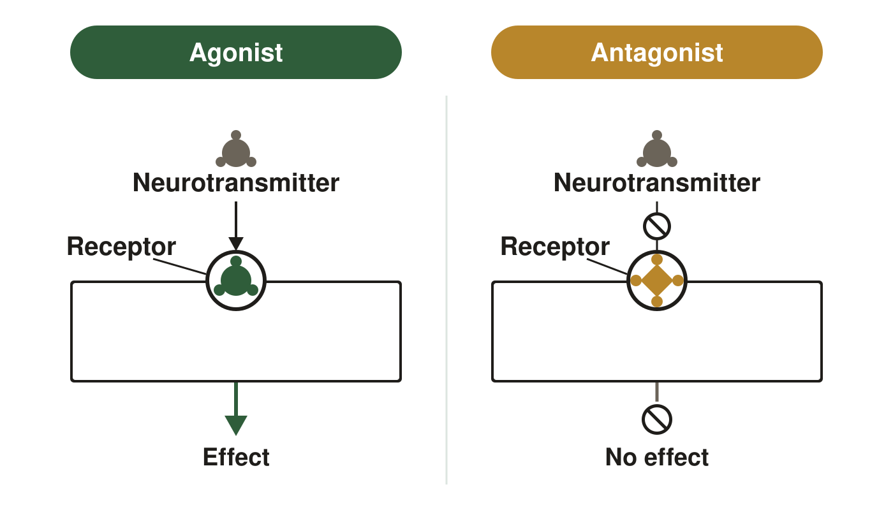
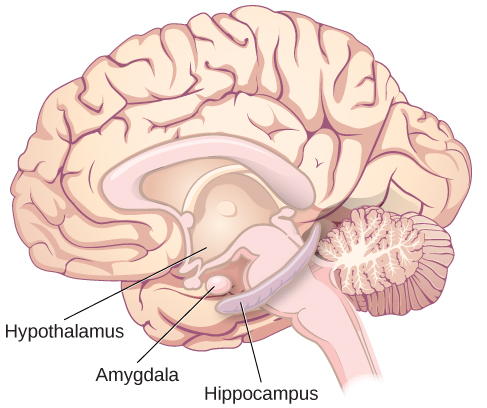
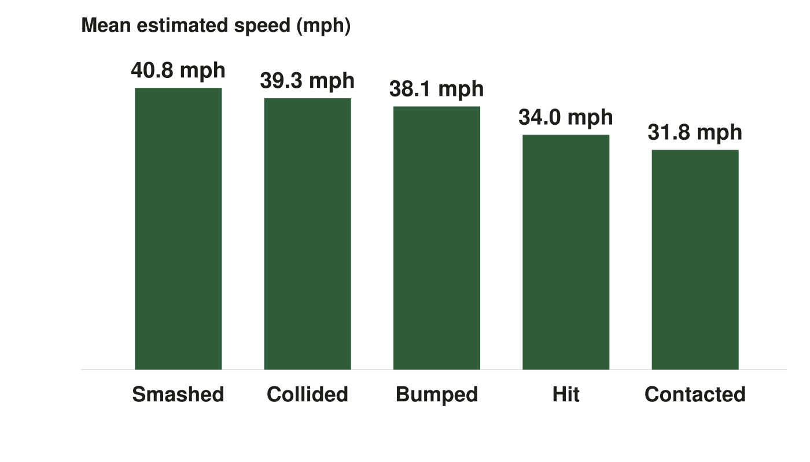

AP Psychology · Class 26
Figures from your class notes
Review of research methods, Unit 1 and Unit 2, before Term 1 grades close. These are the same figures as in your Class Notes, in the same order. If a figure in your notes shows as a gray box, use this page instead.
Slide 11. One Receptor, Two Drugs

Slide 14. What Split-Brain Work Showed

Slide 15. Three Structures, Three Jobs

Slide 45. The Verb Conditions
